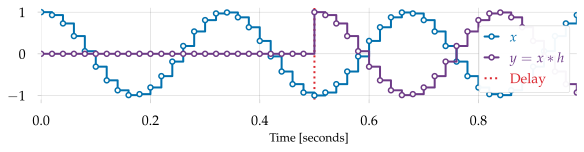
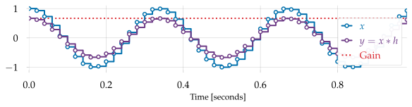

Defining convolution
Contents
3.2. Defining convolution#
Now that we’ve worked through a couple of examples of ways to combine delay, gain, and mixing to produce effects, we can formally define the convolution operation. In full generality, convolution is an operation that takes two sequences \(\blue{x}\) and \(\red{h}\), and produces a new signal \(\purple{y}\). Here, \(\red{x}\) is the input signal and \(\purple{y}\) is the output signal. The sequence \(\red{h[k]}\) contains the coefficients by which each delayed signal is scaled before being mixed to produce the output:
\(\red{h[0]}\) scales the raw input signal \(\blue{x[n]}\),
\(\red{h[1]}\) scales the input delayed by one sample \(\blue{x[n-1]}\),
\(\red{h[2]}\) scales \(\blue{x[n-2]}\), and so on.
Note that \(\blue{x}\) and \(\red{h}\) can have different lengths.
3.2.1. The convolution equation#
Definition 3.1 (Convolution)
The convolution of two sequences \(x[n]\) (of length \(N\)) and \(h[k]\) (of length \(K\)) is defined by the following equation:
This equation is just a slight generalization of the examples we saw in the previous section. In words, it says that the output signal \(\purple{y}\) is computed by summing together several delayed copies of the input (including delay-0), each multiplied by a coefficient \(\red{h[k]}\):
convolution-anim illustrates the computation of a convolution between a square wave and a sequence \(h = [1/2, 1, 0, -1, -1/2]\).
The intermediate steps show how each scaled and shifted copy of \(x\) contributes to the total convolution \(y\) (bottom subplot).
This operation is so common in signal processing that it gets its own notation:
which is short-hand for the summation above, and we read as \(y\) is \(x\) convolved with \(h\).
Incidentally, this is why we use \(a\cdot b\) to denote scalar (number) multiplication instead of \(a*b\). As we will see in chapter 10, convolution can be viewed abstractly as a kind of “multiplication between signals”, and using the same \(*\) notation for both operations could lead to confusion.
3.2.2. Implementing convolution#
Convolution can be implemented in a variety of ways.
They all produce the same result, but some implementations may be more or less efficient, or easy to understand.
The first implementation we’ll cover is the one used to create convolution-anim: we compute the contribution due to each delay individually, and accumulate them in the output buffer y:
# Compute the lengths of our input and filter
N = len(x)
K = len(h)
# Allocate an output buffer
y = np.zeros(N)
# Iterate over delay values
for k in range(K):
# For each delay value, iterate over all sample indices
for n in range(N):
if n >= k:
# No contribution from samples n < k
y[n] += h[k] * x[n-k]
One thing to observe is that y[n] is the sum of many pairs of numbers multiplied together.
Because addition does not depend on the order in which arguments appear (e.g., \(3 + 4 = 4 + 3\)), we can compute this sum in any order we like.
In particular, we can change the order of the loops: the outer loop can range over samples, and the inner loop can range over delay values:
for n in range(N):
for k in range(K):
if n >= k:
y[n] += h[k] * x[n-k]
This implementation computes exactly the same y[n] as the first one, but it does so one sample at a time.
This approach is more common in practice because it allows you to perform convolution in real time, as signals are being generated!
The first example would not allow this, because it has to scan the entire input signal x for one delay value before moving on to the next.
There are yet more ways to implement convolution, but we’ll have to wait until chapter 10 to see how those work. Once you’re comfortable with the idea of convolution, it’s recommended to not implement it yourself, but instead to use a pre-existing implementation like np.convolve.
3.2.3. Special cases#
Before going deeper into the theory of convolution, let’s step back and see how the idea encompasses familiar operations as special cases.
3.2.3.1. Delaying by \(d\) samples#
In a signal delay, there is no gain, and effectively no mixing either. All we want to do is displace the signal in time by a fixed number \(d\) of samples, producing
This is done by setting \(h\) to be an array of \(d\) zeros followed by a single 1:
This \(h\) has \(K = d+1\) coefficients. Plugging this \(h\) into the convolution equation, we’d see that all terms are 0 except for the last (corresponding to \(h[K-1] = 1\)), which results in
which is exactly what we want: \(\purple{y[n]} = \blue{x[n-d]}\).

Fig. 3.3 Delay can be implemented by convolution.#
3.2.3.2. Gain#
Applying gain to a signal means that all samples \(x[n]\) is scaled by some fixed amount \(G\), so
This can be implemented by setting \(h\) to be an array with only a single element (corresponding to a delay of 0):
Again, plugging into the convolution equation, the summation has only one term:

Fig. 3.4 Gain can be implemented by convolution. This example uses a gain value of \(2/3\) to reduce the amplitude of the input signal \(x\).#
Using convolution to implement gain (or delay) might be overkill, but it’s helpful to understand these cases to build an intuition for the properties of convolutional filters.